2022 National 5 Physics - Section 1 questions
Source: Scottish Qualifications Authority (SQA) / Qualifications Scotland. This is a StemInteract HTML companion, not an official HTML edition. Selectable text is supplied alongside original page images. Use the images or original PDF for equations, powers, fractions, vector notation, tables and diagrams; text extraction cannot fully preserve mathematical layout.
Jump to a question
PDF page 1
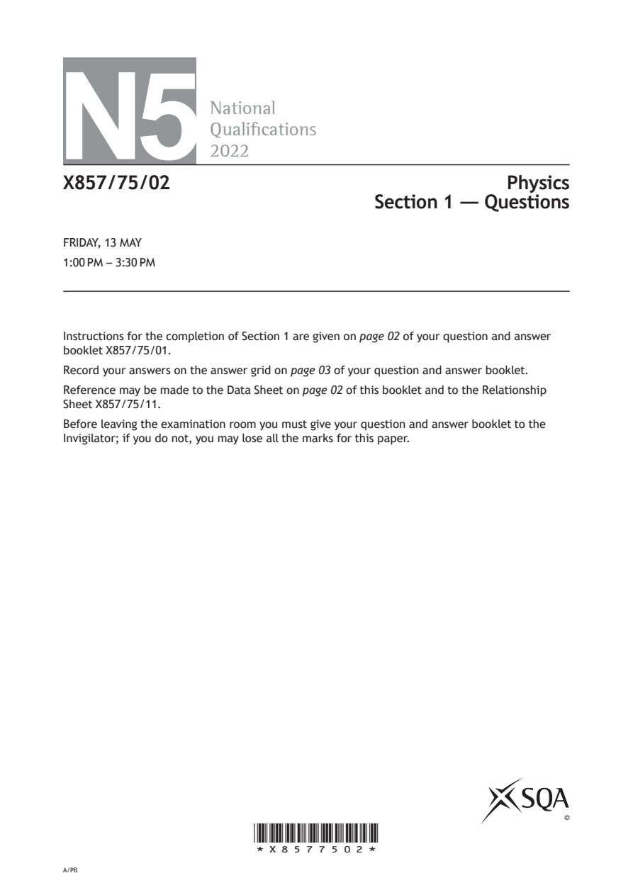
Selectable page text
N5
National
Qualications
2022
X857/75/02 Physics
Section 1 — Questions
FRIDAY, 13 MAY
1:00 PM – 3:30 PM
Instructions for the completion of Section 1 are given on page 02 of your question and answer
booklet X857/75/01.
Record your answers on the answer grid on page 03 of your question and answer booklet.
Reference may be made to the Data Sheet on page 02 of this booklet and to the Relationship
Sheet X857/75/11.
Before leaving the examination room you must give your question and answer booklet to the
Invigilator; if you do not, you may lose all the marks for this paper.
©
*X8577502*
A/PBPDF page 2
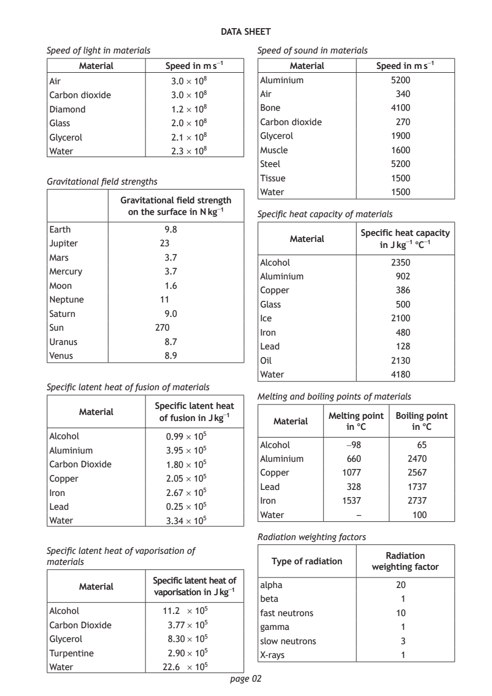
Selectable page text
DATA SHEET
Speed of light in materials Speed of sound in materials
Material Speed in m s⁻¹ Material Speed in m s⁻¹
Air 3.0 × 10⁸ Aluminium 5200
Carbon dioxide 3.0 × 10⁸ Air 340
Diamond 1.2 × 10⁸ Bone 4100
Glass 2.0 × 10⁸ Carbon dioxide 270
Glycerol 2.1 × 10⁸ Glycerol 1900
Water 2.3 × 10⁸ Muscle 1600
Steel 5200
Tissue 1500
Gravitational field strengths
Water 1500
Gravitational field strength
on the surface in N kg⁻¹ Specific heat capacity of materials
Earth 9.8
Specific heat capacity
Material
Jupiter 23 in J kg⁻¹ °C⁻¹
Mars 3.7
Alcohol 2350
Mercury 3.7
Aluminium 902
Moon 1.6
Copper 386
Neptune 11
Glass 500
Saturn 9.0
Ice 2100
Sun 270
Iron 480
Uranus 8.7
Lead 128
Venus 8.9
Oil 2130
Water 4180
Specific latent heat of fusion of materials
Melting and boiling points of materials
Specific latent heat
Material
of fusion in J kg⁻¹ Melting point Boiling point
Material
in °C in °C
Alcohol 0.99 × 10⁵
Alcohol −98 65
Aluminium 3.95 × 10⁵
Aluminium 660 2470
Carbon Dioxide 1.80 × 10⁵
Copper 1077 2567
Copper 2.05 × 10⁵
Lead 328 1737
Iron 2.67 × 10⁵
Iron 1537 2737
Lead 0.25 × 10⁵
Water – 100
Water 3.34 × 10⁵
Radiation weighting factors
Specific latent heat of vaporisation of
Radiation
materials Type of radiation
weighting factor
Specific latent heat of
Material alpha 20
vaporisation in J kg⁻¹
beta 1
Alcohol 11.2 × 10⁵ fast neutrons 10
Carbon Dioxide 3.77 × 10⁵ gamma 1
Glycerol 8.30 × 10⁵ slow neutrons 3
Turpentine 2.90 × 10⁵ X-rays 1
Water 22.6 × 10⁵
page 02PDF page 3
Section 1, Question 1Section 1, Question 2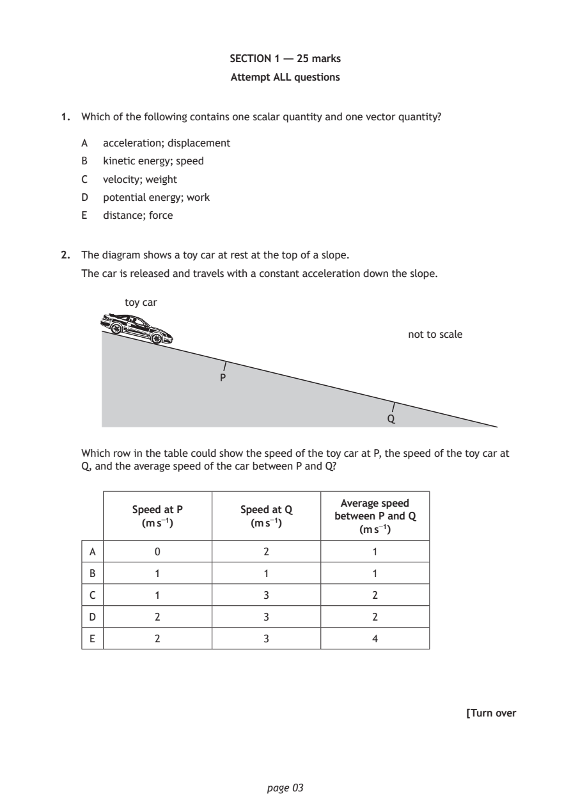
Selectable page text
SECTION 1 — 25 marks
Attempt ALL questions
1. Which of the following contains one scalar quantity and one vector quantity?
A acceleration; displacement
B kinetic energy; speed
C velocity; weight
D potential energy; work
E distance; force
2. The diagram shows a toy car at rest at the top of a slope.
The car is released and travels with a constant acceleration down the slope.
toy car
not to scale
P
Q
Which row in the table could show the speed of the toy car at P, the speed of the toy car at
Q, and the average speed of the car between P and Q?
Average speed
Speed at P Speed at Q
between P and Q
(m s⁻¹) (m s⁻¹)
(m s⁻¹)
A 0 2 1
B 1 1 1
C 1 3 2
D 2 3 2
E 2 3 4
[Turn over
page 03PDF page 4
Section 1, Question 3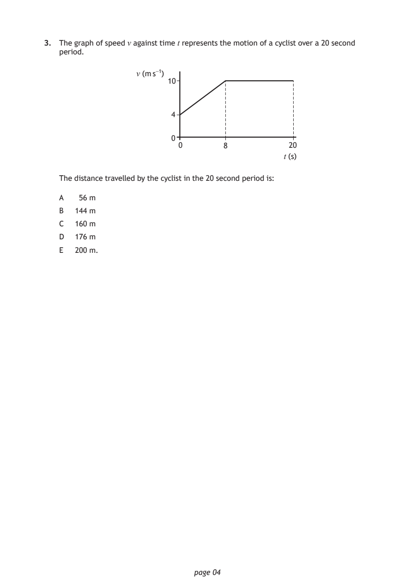
Selectable page text
3. The graph of speed v against time t represents the motion of a cyclist over a 20 second
period.
v (m s⁻¹)
10
4
0
0 8 20
t (s)
The distance travelled by the cyclist in the 20 second period is:
A 56 m
B 144 m
C 160 m
D 176 m
E 200 m.
page 04PDF page 5
Section 1, Question 4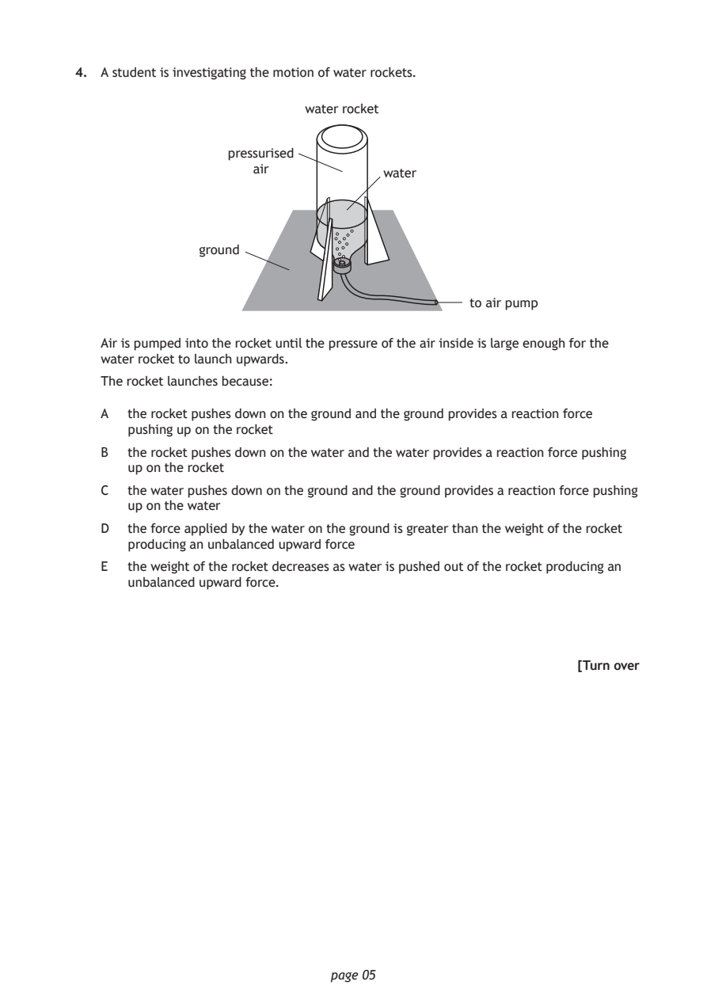
Selectable page text
4. A student is investigating the motion of water rockets.
water rocket
pressurised
air
water
ground
to air pump
Air is pumped into the rocket until the pressure of the air inside is large enough for the
water rocket to launch upwards.
The rocket launches because:
A the rocket pushes down on the ground and the ground provides a reaction force
pushing up on the rocket
B the rocket pushes down on the water and the water provides a reaction force pushing
up on the rocket
C the water pushes down on the ground and the ground provides a reaction force pushing
up on the water
D the force applied by the water on the ground is greater than the weight of the rocket
producing an unbalanced upward force
E the weight of the rocket decreases as water is pushed out of the rocket producing an
unbalanced upward force.
[Turn over
page 05PDF page 6
Section 1, Question 5Section 1, Question 6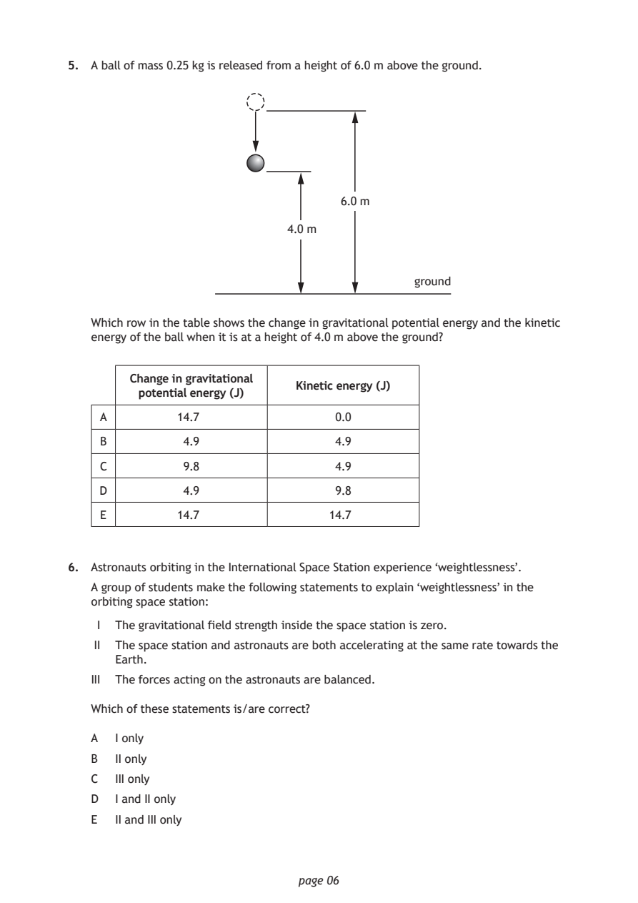
Selectable page text
5. A ball of mass 0.25 kg is released from a height of 6.0 m above the ground.
6.0 m
4.0 m
ground
Which row in the table shows the change in gravitational potential energy and the kinetic
energy of the ball when it is at a height of 4.0 m above the ground?
Change in gravitational
Kinetic energy (J)
potential energy (J)
A 14.7 0.0
B 4.9 4.9
C 9.8 4.9
D 4.9 9.8
E 14.7 14.7
6. Astronauts orbiting in the International Space Station experience ‘weightlessness’.
A group of students make the following statements to explain ‘weightlessness’ in the
orbiting space station:
I The gravitational field strength inside the space station is zero.
II The space station and astronauts are both accelerating at the same rate towards the
Earth.
III The forces acting on the astronauts are balanced.
Which of these statements is/are correct?
A I only
B II only
C III only
D I and II only
E II and III only
page 06PDF page 7
Section 1, Question 7Section 1, Question 8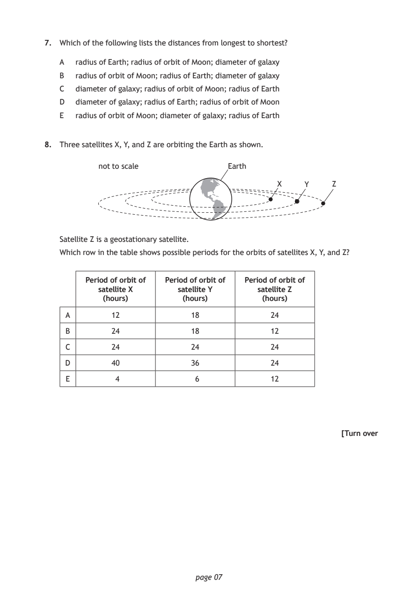
Selectable page text
7. Which of the following lists the distances from longest to shortest?
A radius of Earth; radius of orbit of Moon; diameter of galaxy
B radius of orbit of Moon; radius of Earth; diameter of galaxy
C diameter of galaxy; radius of orbit of Moon; radius of Earth
D diameter of galaxy; radius of Earth; radius of orbit of Moon
E radius of orbit of Moon; diameter of galaxy; radius of Earth
8. Three satellites X, Y, and Z are orbiting the Earth as shown.
not to scale Earth
X Y Z
Satellite Z is a geostationary satellite.
Which row in the table shows possible periods for the orbits of satellites X, Y, and Z?
Period of orbit of Period of orbit of Period of orbit of
satellite X satellite Y satellite Z
(hours) (hours) (hours)
A 12 18 24
B 24 18 12
C 24 24 24
D 40 36 24
E 4 6 12
[Turn over
page 07PDF page 8
Section 1, Question 9Section 1, Question 10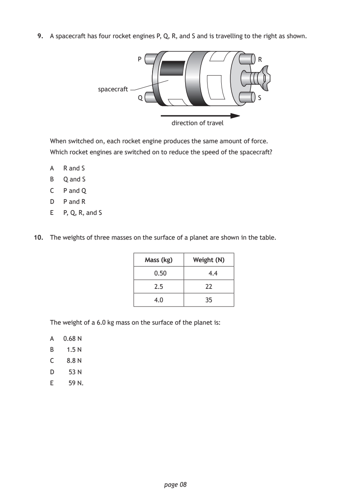
Selectable page text
9. A spacecraft has four rocket engines P, Q, R, and S and is travelling to the right as shown.
P R
spacecraft
Q S
direction of travel
When switched on, each rocket engine produces the same amount of force.
Which rocket engines are switched on to reduce the speed of the spacecraft?
A R and S
B Q and S
C P and Q
D P and R
E P, Q, R, and S
10. The weights of three masses on the surface of a planet are shown in the table.
Mass (kg) Weight (N)
0.50 4.4
2.5 22
4.0 35
The weight of a 6.0 kg mass on the surface of the planet is:
A 0.68 N
B 1.5 N
C 8.8 N
D 53 N
E 59 N.
page 08PDF page 9
Section 1, Question 11Section 1, Question 12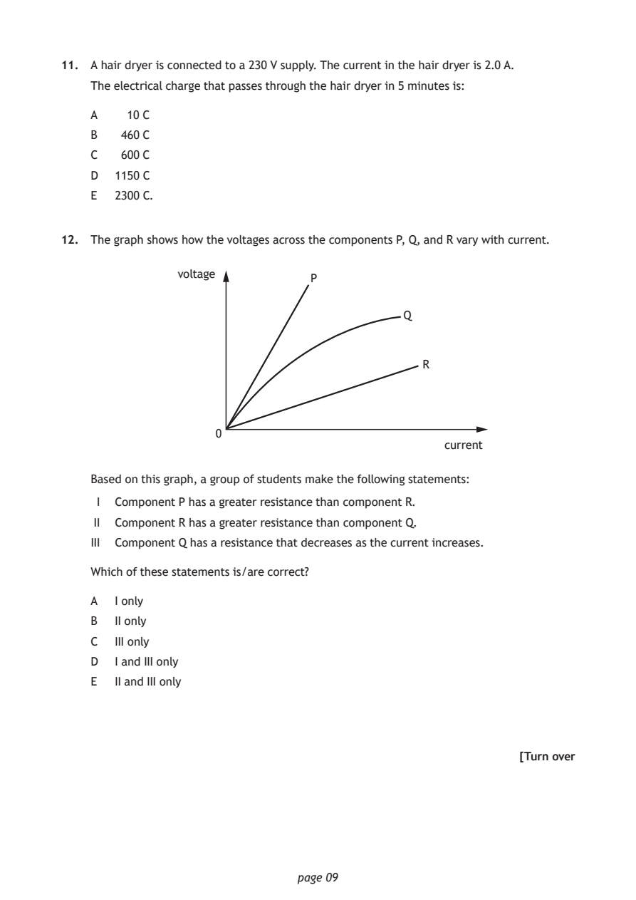
Selectable page text
11. A hair dryer is connected to a 230 V supply. The current in the hair dryer is 2.0 A.
The electrical charge that passes through the hair dryer in 5 minutes is:
A 10 C
B 460 C
C 600 C
D 1150 C
E 2300 C.
12. The graph shows how the voltages across the components P, Q, and R vary with current.
voltage
P
Q
R
0
current
Based on this graph, a group of students make the following statements:
I Component P has a greater resistance than component R.
II Component R has a greater resistance than component Q.
III Component Q has a resistance that decreases as the current increases.
Which of these statements is/are correct?
A I only
B II only
C III only
D I and III only
E II and III only
[Turn over
page 09PDF page 10
Section 1, Question 13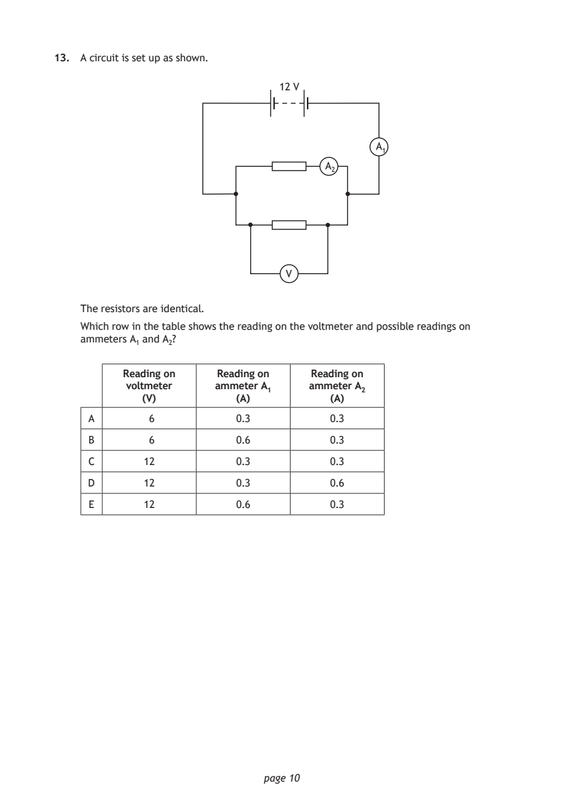
Selectable page text
13. A circuit is set up as shown.
12 V
A₁
A₂
V
The resistors are identical.
Which row in the table shows the reading on the voltmeter and possible readings on
ammeters A₁ and A₂?
Reading on Reading on Reading on
voltmeter ammeter A₁ ammeter A₂
(V) (A) (A)
A 6 0.3 0.3
B 6 0.6 0.3
C 12 0.3 0.3
D 12 0.3 0.6
E 12 0.6 0.3
page 10PDF page 11
Section 1, Question 14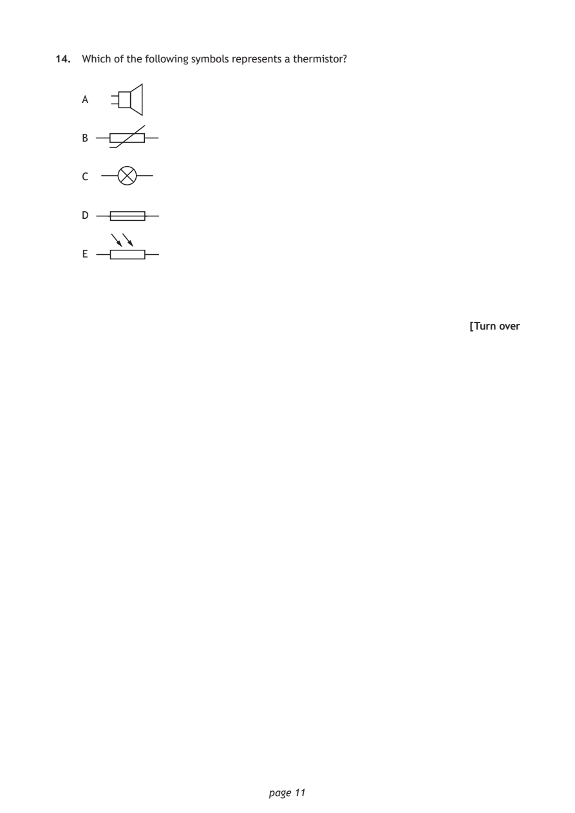
Selectable page text
14. Which of the following symbols represents a thermistor?
A
B
C
D
E
[Turn over
page 11PDF page 12
Section 1, Question 15Section 1, Question 16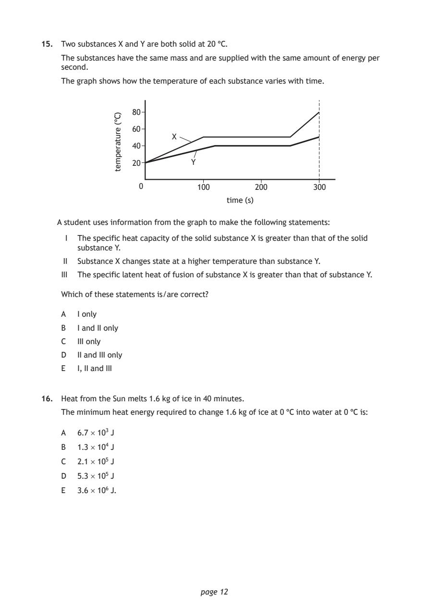
Selectable page text
15. Two substances X and Y are both solid at 20 °C.
The substances have the same mass and are supplied with the same amount of energy per
second.
The graph shows how the temperature of each substance varies with time.
page 12
)C°(
erutarepmet
80
60
X
40
20 Y
0 100 200 300
time (s)
A student uses information from the graph to make the following statements:
I The specific heat capacity of the solid substance X is greater than that of the solid
substance Y.
II Substance X changes state at a higher temperature than substance Y.
III The specific latent heat of fusion of substance X is greater than that of substance Y.
Which of these statements is/are correct?
A I only
B I and II only
C III only
D II and III only
E I, II and III
16. Heat from the Sun melts 1.6 kg of ice in 40 minutes.
The minimum heat energy required to change 1.6 kg of ice at 0 °C into water at 0 °C is:
A 6.7 × 10³ J
B 1.3 × 10⁴ J
C 2.1 × 10⁵ J
D 5.3 × 10⁵ J
E 3.6 × 10⁶ J.PDF page 13
Section 1, Question 17Section 1, Question 18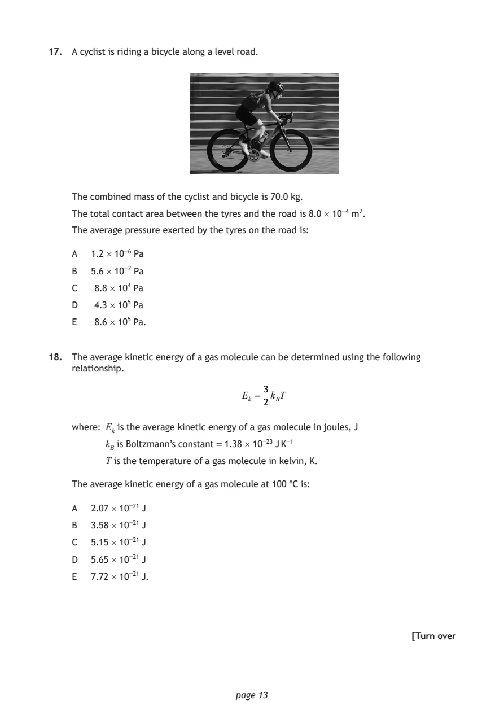
Selectable page text
17. A cyclist is riding a bicycle along a level road.
The combined mass of the cyclist and bicycle is 70.0 kg.
The total contact area between the tyres and the road is 8.0 × 10⁻⁴ m².
The average pressure exerted by the tyres on the road is:
A 1.2 × 10⁻⁶ Pa
B 5.6 × 10⁻² Pa
C 8.8 × 10⁴ Pa
D 4.3 × 10⁵ Pa
E 8.6 × 10⁵ Pa.
18. The average kinetic energy of a gas molecule can be determined using the following
relationship.
3
Eₖ = k_{B}T
2
where: Eₖ is the average kinetic energy of a gas molecule in joules, J
k _{B} is Boltzmann’s constant = 1.38 × 10⁻²³ J K⁻¹
T is the temperature of a gas molecule in kelvin, K.
The average kinetic energy of a gas molecule at 100 °C is:
A 2.07 × 10⁻²¹ J
B 3.58 × 10⁻²¹ J
C 5.15 × 10⁻²¹ J
D 5.65 × 10⁻²¹ J
E 7.72 × 10⁻²¹ J.
[Turn over
page 13PDF page 14
Section 1, Question 19Section 1, Question 20Section 1, Question 21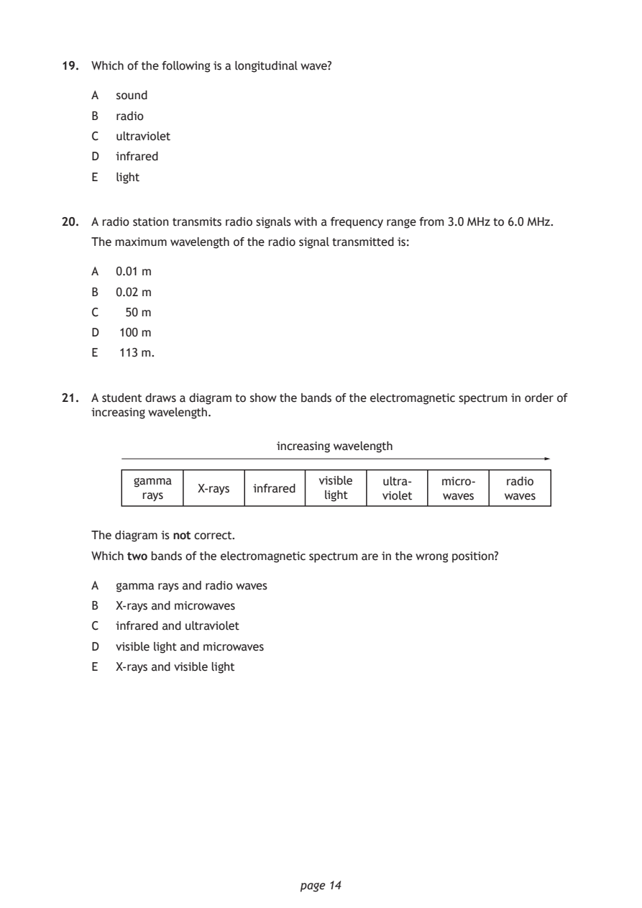
Selectable page text
19. Which of the following is a longitudinal wave?
A sound
B radio
C ultraviolet
D infrared
E light
20. A radio station transmits radio signals with a frequency range from 3.0 MHz to 6.0 MHz.
The maximum wavelength of the radio signal transmitted is:
A 0.01 m
B 0.02 m
C 50 m
D 100 m
E 113 m.
21. A student draws a diagram to show the bands of the electromagnetic spectrum in order of
increasing wavelength.
increasing wavelength
gamma visible ultra- micro- radio
X-rays infrared
rays light violet waves waves
The diagram is not correct.
Which two bands of the electromagnetic spectrum are in the wrong position?
A gamma rays and radio waves
B X-rays and microwaves
C infrared and ultraviolet
D visible light and microwaves
E X-rays and visible light
page 14PDF page 15
Section 1, Question 22Section 1, Question 23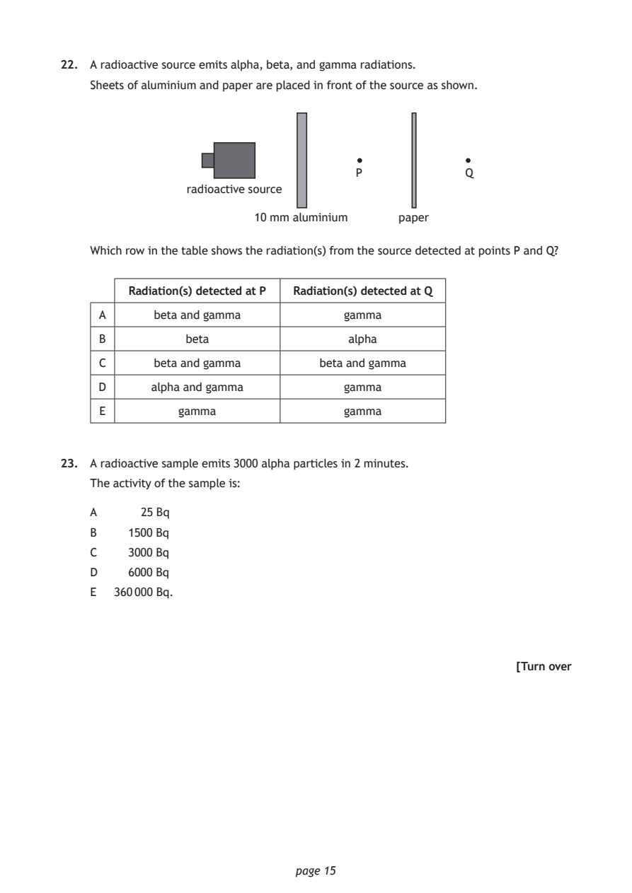
Selectable page text
22. A radioactive source emits alpha, beta, and gamma radiations.
Sheets of aluminium and paper are placed in front of the source as shown.
P Q
radioactive source
10 mm aluminium paper
Which row in the table shows the radiation(s) from the source detected at points P and Q?
Radiation(s) detected at P Radiation(s) detected at Q
A beta and gamma gamma
B beta alpha
C beta and gamma beta and gamma
D alpha and gamma gamma
E gamma gamma
23. A radioactive sample emits 3000 alpha particles in 2 minutes.
The activity of the sample is:
A 25 Bq
B 1500 Bq
C 3000 Bq
D 6000 Bq
E 3 60 000 Bq.
[Turn over
page 15PDF page 16
Section 1, Question 24Section 1, Question 25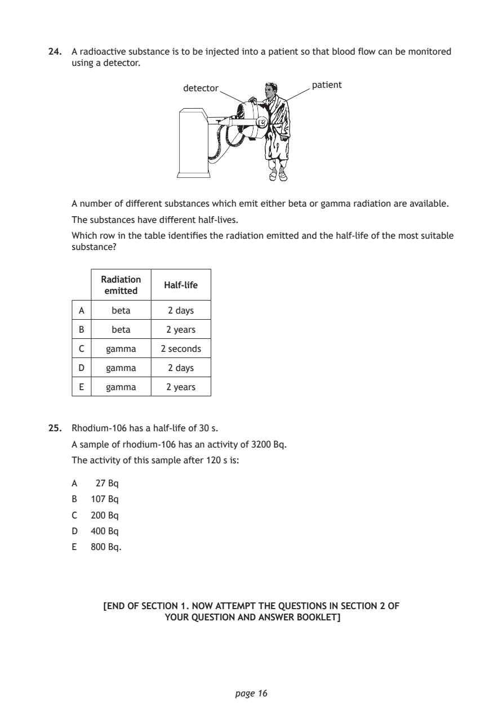
Selectable page text
24. A radioactive substance is to be injected into a patient so that blood flow can be monitored
using a detector.
patient
detector
A number of different substances which emit either beta or gamma radiation are available.
The substances have different half-lives.
Which row in the table identifies the radiation emitted and the half-life of the most suitable
substance?
Radiation
Half‑life
emitted
A beta 2 days
B beta 2 years
C gamma 2 seconds
D gamma 2 days
E gamma 2 years
25. Rhodium-106 has a half-life of 30 s.
A sample of rhodium-106 has an activity of 3200 Bq.
The activity of this sample after 120 s is:
A 27 Bq
B 107 Bq
C 200 Bq
D 400 Bq
E 800 Bq.
[END OF SECTION 1. NOW ATTEMPT THE QUESTIONS IN SECTION 2 OF
YOUR QUESTION AND ANSWER BOOKLET]
page 16PDF page 17

Selectable page text
SPACE FOR ROUGH WORK
page 17PDF page 18

Selectable page text
SPACE FOR ROUGH WORK
page 18PDF page 19

Selectable page text
[BLANK PAGE]
DO NOT WRITE ON THIS PAGE
page 19PDF page 20
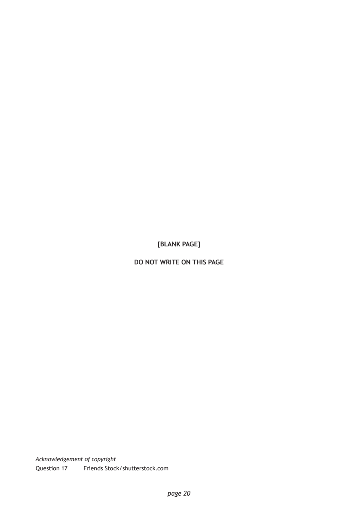
Selectable page text
[BLANK PAGE]
DO NOT WRITE ON THIS PAGE
Acknowledgement of copyright
Question 17 Friends Stock/shutterstock.com
page 20